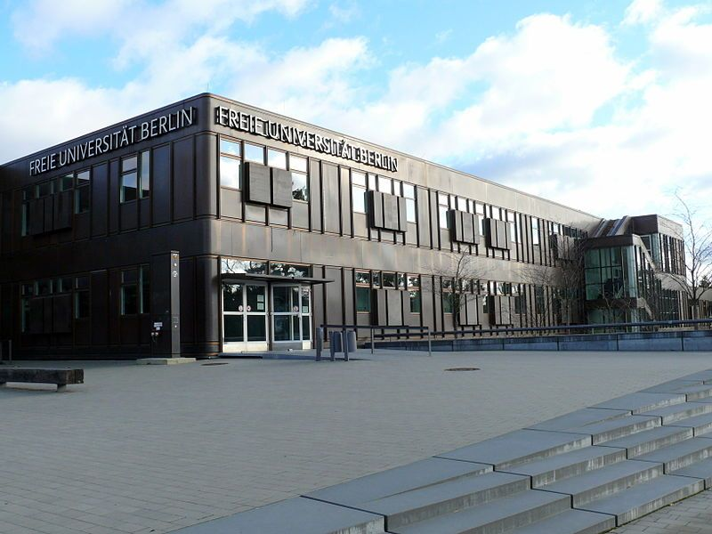

Free University of Berlin

რატომ უნდა აირჩიო Free University of Berlin?
Free University of Berlin გერმანიის ერთ-ერთი ყველაზე პრესტიჟული უნივერსიტეტია. ის განსაკუთრებით პოპულარულია საერთაშორისო სტუდენტებში და გამოირჩევა მაღალი აკადემიური ხარისხით.
უნივერსიტეტი მდებარეობს ბერლინში, რომელიც ევროპის ერთ-ერთი ყველაზე მრავალფეროვანი და სტუდენტებისთვის კომფორტული ქალაქია.
რით არის ცნობილი?
- International Relations
- Political Science
- Law
- Social Sciences
- Research Programs
უნივერსიტეტი ხშირად იკავებს მაღალ პოზიციებს მსოფლიო რეიტინგებში და აქტიურად თანამშრომლობს სხვა წამყვან უნივერსიტეტებთან.
უპირატესობები
- საერთაშორისო სტუდენტებისთვის მეგობრული გარემო
- გაცვლითი პროგრამები მსოფლიოს მრავალ ქვეყანაში
- თანამედროვე ბიბლიოთეკები და კვლევითი ცენტრები
- მაღალი ხარისხის განათლება
- საერთაშორისო კარიერული შესაძლებლობები
როგორ ჩააბარო?
უნივერსიტეტში ჩასაბარებლად საჭიროა:
- სკოლის ატესტატი
- აკადემიური ნიშნების ამონაწერი
- ინგლისური ან გერმანული ენის სერტიფიკატი
- სამოტივაციო წერილი
- პასპორტის ასლი
ვისთვის არის საუკეთესო არჩევანი?
ეს უნივერსიტეტი განსაკუთრებით კარგი არჩევანია იმ სტუდენტებისთვის, რომლებიც დაინტერესებულნი არიან საერთაშორისო ურთიერთობებით, პოლიტიკით, სამართლით, კვლევითი საქმიანობითა და სოციალური მეცნიერებებით.